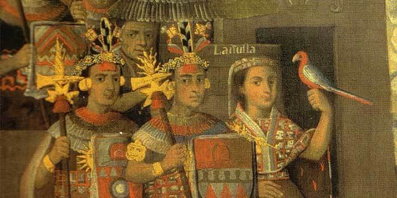

Introducción:
Después de la muerte de Atahualpa los españoles nombraron a Toparpa como nuevo inca , no obstante este moriría en Jauja.
En es te caso los españoles no tendrían tanto problema en encontrar al nuevo inca ya que llegaría Manco Inca , este era hijo de Huayna Cápac .
Llegada al Cusco:
Cuenta la historia que cuando los españoles estaban cerca a Jaquijahuana(Capital del Cusco) recibieron una visita de Manco Inca y este le prometió reconstruir el imperio que había dejado Atahualpa y brindarles apoyo, aunque los españoles lo vieron como alguien manipulable , así que lo escogieron.
La rebelión:
Llegando al Cusco los españoles y Manco Inca ganarían su primera batalla , cabe recordar que seguían en Jaquijahuana ... pero más adelante llegaríael problema , Manco Inca sufriría humillaciones por parte de sus supuestos aliados , lo cual llevaría a Manco Inca a rebelarse , hubo un momento que le mintió a Hernando donde estaba el oro este estaba muy "hambriento por el oro" y fue engañado rápidamente y ahí Manco Inca escapó y reuniría.
El 4 de mayo de 1436 Manco Inca reuniría 180000 indígenas y los españoles alrededor de unos 30000 indígenas, pero los españoles eran 300 con una armadura espectacular y cuando empezó la batalla su plan de Manco Inca fue atacar la pata de los caballos y pasó esto atacaría y estaría a punto de acabar con los españoles pero los españoles trajeron refuerzos y ganar.
OJO:
Santiago Apóstol, conocido en España
durante las guerras de reconquista como
Santiago Matamoros.
La historia terminaría en el templo de Sacsayhuamán.
Luego llegaría los demás conflictos

Perú:
Se independizó en 1821gracias a Don José de San Martín
Perú se independizó gracias a Don José de San Martín
Caja Azul